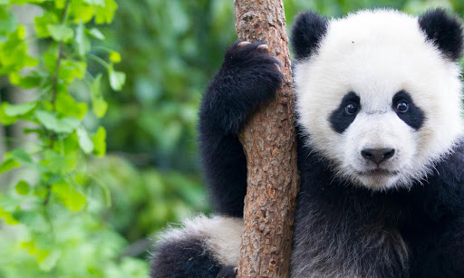

by its bold black-and-white coat and rotund body
The name
"giant panda" is sometimes used to distinguish it from the red panda, a
neighboring musteloid. Though it belongs to the order Carnivora, the giant
panda is a folivore, with bamboo shoots and leaves making up more than 99% of
its diet.[7] Giant pandas in the wild will occasionally eat other grasses, wild tubers,
or even meat in the form of birds, rodents, or carrion. In captivity,
they may receive honey, eggs, fish, yams, shrub leaves, oranges, or bananas along with specially
prepared food.[8][9]

For many decades, the precise taxonomic classification of the giant panda was under debate because it shares characteristics with both bears and raccoons. [18] However, molecular studies indicate the giant panda is a true bear, part of the family Ursidae.[6][19] These studies show it diverged about 19 million years ago from the common ancestor of the Ursidae;[20] it is the most basal member of this family and equidistant from all other extant bear species.[21][20] The giant panda has been referred to as a living fossil.[22]
The giant panda has luxuriant black-and-white fur. Adults measure around 1.2 to 1.9 metres (3 feet 11 inches to 6 feet 3 inches) long, including a tail of about 10–15 cm (4–6 in), and 60 to 90 cm (24 to 35 in) tall at the shoulder.[34][35] Males can weigh up to 160 kg (350 lb). [36] Females (generally 10–20% smaller than males)[37] can weigh as little as 70 kg (150 lb), but can also weigh up to 125 kg (276 lb).[11][34][38] The average weight for adults is 100 to 115 kg (220 to 254 lb).[39]
